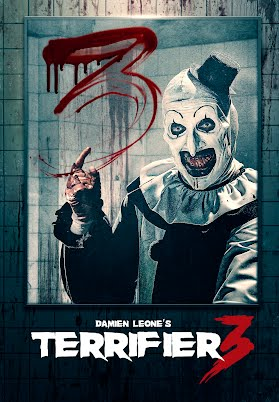
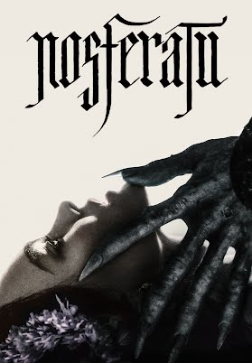

Esse gênero é mais focado para aqueles que gosta de sustos e até mesmos filmes bem horripilantes, aqui segue uma lista de recomendações.

Os residentes de Miles County vão lidar com um natal aterrorizante, quando Art O Palhaço Assassino decide matar sua sede por sangue durante o feriado. Retornando após dois filmes amedrontadores, o palhaço sanguinário continua aterrorizando famílias, trazendo crueldade e caos para o Natal de todos.
Duração: 2 horas e 5min
Classificação indicativa: 18 anos

Um conto gótico de obsessão entre uma jovem assombrada na Alemanha do século XIX e o antigo vampiro da Transilvânia que a persegue, trazendo consigo um horror incalculável.
Duração: 2 horas e 12min
Classificação indicativa: 18 anos